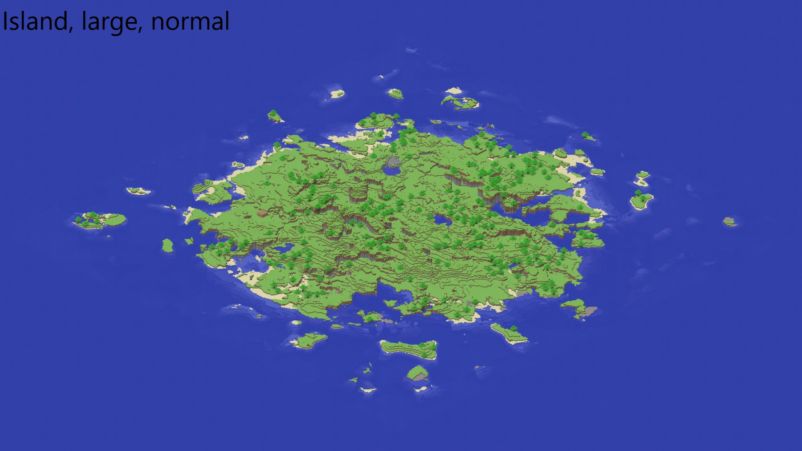

Torrentem
Torrentem is a parallel CPU/GPU multi-physics solver library developed in C++ to be the key
driver in my PhD research. Developed to be used in a powerful and flexible way, it implements
advanced numerical techniques such as RBVMS and stabilised finite element formulations, a
level-set method, custom GPU based linear solvers, and a mesh partitioning and MPI communication
model for Parallel CPU on multi-node HPCs. Currently closed source.
